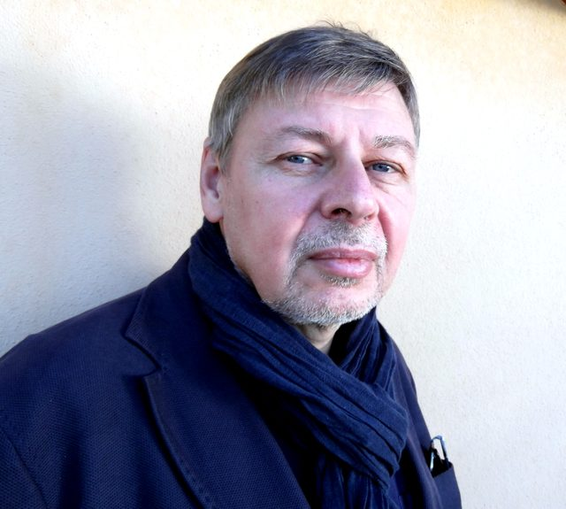

Контакты

Соловьёв Константин Анатольевич
- Электронная почта
- solovyevka@gmail.com
- Телефон
- +7 (916) 608-27-89
Вопросы по работе сайта
Не открывается страница, не скачивается файл, что-то отображается неправильно? Напишите в Telegram: @qddwxd.
Фотографии на сайте
Фон сайта — фотографии с Викисклада:
- Moscow - 2025 - General view of Red Square on a warm autumn day2 — Юрий Д.К., CC BY 4.0
- Moscow 2026-07-17 008 — Perituss, CC0
- Ivan the Great Bell Tower, with Assumption Belfry on the left (19964249975) — Jorge Láscar from Melbourne, Australia, CC BY 2.0
- Moscow - 2025 - St. Basil's Cathedral (3) — Юрий Д.К., CC BY 4.0
- Moscow. Main building of Moscow State University P4131808 2600 — Alexxx1979, CC BY-SA 4.0
- State Historical Museum, 2024-8 — Юрий Д.К., CC BY 4.0
- Moscow - 2025 - Details of the GUM and linden trees2 — Юрий Д.К., CC BY 4.0
- Moscow Kremlin and Bolshoy Kamenny Bridge late evening 01 — Andrey Korzun, CC BY-SA 4.0
- Saint Basil's Cathedral interior by shakko 08 — shakko, CC BY-SA 3.0
- Saint Basil's Cathedral interior by shakko 05 — shakko, CC BY-SA 3.0
- Interiors of Main building of Moscow State University 2025-02 1739117144 — Artyom Svetlov, CC BY 4.0
- Russian princes family tree (GIM ceiling) 04 by shakko — Shakko, CC BY-SA 3.0
- Moscow GUM indoor gallery — Vcarceler, CC BY-SA 3.0
- Pashkov House 2024-01 1705109351 — Artyom Svetlov, CC BY-SA 4.0